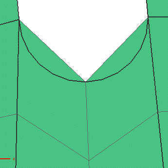
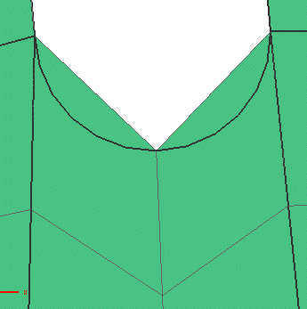

修改2D 单元
使用下列命令来修改2D 单元以改善网格质量：
-
使用分割壳
 命令来分割2D 四边形单元
命令来分割2D 四边形单元 -
使用合并三角形 命令将所选的两个三角形单元合并为一个四边形单元
-
使用移动节点 命令，可以将所选的节点移动到新位置
下图显示四边形单元分割为三角形单元。

使用下列命令来修改2D 单元以改善网格质量：
使用分割壳  命令来分割2D 四边形单元
命令来分割2D 四边形单元
使用合并三角形 命令将所选的两个三角形单元合并为一个四边形单元
使用移动节点 命令，可以将所选的节点移动到新位置
下图显示四边形单元分割为三角形单元。
